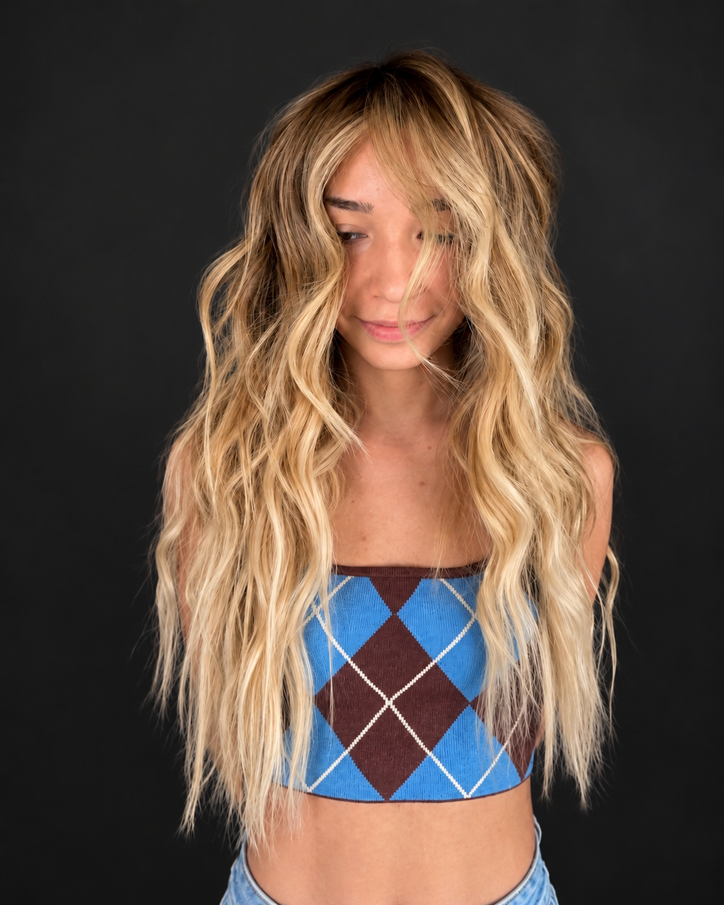

Lived-in blondes in Santa Monica
You can be very blonde and still have a soft grow-out. The trick is deciding which areas really need lightness and where your natural depth can do some of the work. I keep the brightness where you’ll notice it most, especially around your face.
Choose Hair Color, select a service, then choose Bradley Sanders.

How much brightness do you want at the root?
I’ll look at where you part your hair, how you wear it and how much of your natural color you want to see. A face frame can lift the whole look without brightening everything. A half or full highlight makes more sense when you want that blonde to carry through more of your hair.
Lived-in describes the finish, not the technique. I may use foils, hand-painted balayage or both, depending on how much lift and softness we need.
Good to know
Does lived-in mean dark roots?
Not necessarily. You can keep the transition soft without making the root look heavy. How much depth to leave depends on your natural base and how bright you want the blonde to read.
Will I still need a gloss?
Possibly. Tone can shift before you need more highlights. A gloss can refresh how warm or cool the blonde looks without adding more lightness.
Explore more color services
Ready to book your color?
Saulino Smith Salon · 1431 Ocean Avenue, Santa Monica, CA 90401
Get directions · Meet Bradley
Choose Hair Color, select a service, then choose Bradley Sanders.